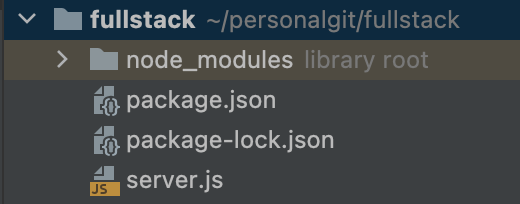
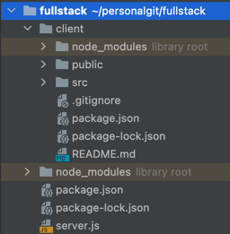

Access Express and CRA (Create React app) development server routes on same localhost port
If you have a fullstack app where, say, landing routes are served using Express, and there's an inner "App" made using react, it's comfortable to develop both on the same port. Example scenario:
http://localhost:3000/app<- Create react app web development server configured with"homepage": "app"inpackage.jsonhttp://localhost:4000/api<- Express based API routeshttp://localhost:4000/landing<- Express based static landing pages
Create react app has a proxy feature allowing us to seamlessly work on http://localhost:3000/app and access the API without any CORS issues. To configure it, add "proxy" to the CRA project's package.json:
{
...,
"homepage": "/app",
"proxy": "http://localhost:4000" <-- add this
}With this config, all requests made to https://localhost:3000/api, except those containing Accept: text/html header, will be proxied to https://localhost:4000 (our backend server).
However, by design this proxying will not work for landing pages (note the Accept: text/html header exception). The alternative way to configure "proxy" for CRA - the setupProxy.js will not help in this case too.
Instead, consider proxying the other way:
- Don't proxy CRA -> Express backend
- Proxy Express backend -> CRA
// Express code
const request = require('request');
app.get("/app/*", function (req, res) {
req.pipe(request(`http://localhost:3000${req.path}`)).pipe(res);
});We take the req object, pipe it to the request library with makes identical request to another URL. Then the result is piped back to response.
Our custom Express server has no limitations regarding any headers, so will successfully proxy the request.
Full example and use case
Let's create a basic fullstack app. Obviously (but not so obviously when I was first starting 10 years ago..), you'll need Node. Begin by creating an Express Hello world app.
Express server
From inside directory fullstack (any name will of course work), set up a basic Express app + add request http client package:
npm install express requestThis will generate a package.json file similar to this:
// fullstack/package.json
{
"dependencies": {
"request": "^2.88.2",
"express": "^4.17.2"
}
}
Create a server.js file with the "Hello world" app contents:
// fullstack/server.js
const express = require('express')
const app = express()
const port = 4000
app.get('/', (req, res) => {
res.send('Hello World!')
})
app.listen(port, () => {
console.log(`Example app listening on port ${port}`)
})Your directory structure should look like this:

To test your Express app, from fullstack directory run:
node server.jsVisit http://localhost:4000, you should see "Hello world" text content returned by the Express server. Close the server by pressing CTRL + C in the terminal for now.
Create react app "client" setup
From "fullstack" directory, create a React app called "client":
npx create-react-app clientYour directory "fullstack" should now look like this:

Configure CRA to have homepage of /app. This is not strictly required if you know what you're doing, but out of scope of this article.
// fullstack/client/package.json
{
...,
"homepage": "/app"
}
Start the CRA dev server, from the fullstack/client directory:
npm run devVisit http://localhost:3000/app and you should see a basic react template app.
Configure Express proxy
Now we need to proxy http://localhost:4000/app/* to the CRA server running on port 3000. In fullstack/server.js
containing the "Hello world" Express code, add some lines:
app.get("/app/*", function (req, res) {
console.info(`Proxying to localhost:3000${req.path}`);
req.pipe(request(`http://localhost:3000${req.path}`)).pipe(res);
});Why /app/* with the wildcard, instead of just /app ? CRA will need to serve some static assets, like js files, stylesheets, favicons... Requests to all of them need to be proxied to the CRA dev server.
Testing it all out
The steps:
- make sure your CRA dev server is still running by visiting http://localhost:3000/app (should open demo react app);
- start the Express server again by running
node server.jsfrom thefullstackdirectory, check if http://localhost:4000 is still showing "Hello world" message;
- access http://localhost:4000/app/hello.
In the 3rd step, what should happen is:
- Express will get a request to
http://localhost:4000/app/hello gethandler forhttp://localhost:4000/app/*will catch it and run our proxying logicrequestlibrary will make request tohttp://localhost:3000/app/hello- CRA dev server will return index.html contents
- the html contents will be piped to Express response
- you will get the proxied react page, on the port of Express server
Hope this makes sense.
Further reading:
- Express hello world
- Create React App proxy
- A useful blog post about Node .pipe()
- More docs on .pipe() from nodejs.org
Have a great day, reader. End.